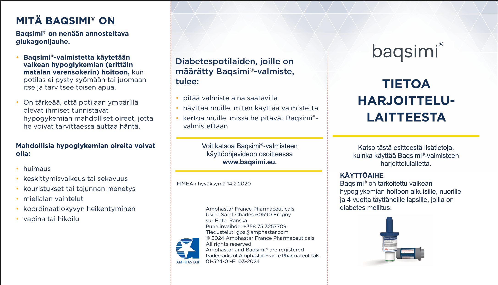

🚑 Hätätilanne
🚨 Toimi ensin lapsen voinnin mukaan
Hätätilanteessa tärkeintä on arvioida lapsen vointia. Älä jää odottamaan pumpun tai sensorin tietoja, jos lapsen vointi on huono.
⚠️ Milloin kyseessä on hätätilanne?
- lapsi ei pysty syömään tai juomaan
- lapsi on tajuton
- lapsella on kouristuskohtaus
- lapsi ei reagoi normaalisti
- lapsen vointi ei korjaannu matalan verensokerin hoidon jälkeen
🩸 Vakava matala verensokeri
Vakavassa matalassa verensokerissa lapsi voi olla esimerkiksi sekava, hyvin väsynyt, vaikeasti heräteltävä, tajuton tai kouristeleva.
Jos lapsi pystyy syömään tai juomaan:
- Anna nopeasti imeytyvää hiilihydraattia.
- Noudata 🩸 Matalat-ohjeistusta.
- Seuraa lapsen vointia.
Jos lapsi ei pysty syömään tai juomaan:
⚠️ Älä anna mitään suuhun.
- Anna Baqsimi nenään.
- Soita 112.
- Aseta lapsi kylkiasentoon tarvittaessa.
- Ota yhteys huoltajaan.
💊 Baqsimi – vakavan matalan verensokerin hoito

Baqsimi on nenään annettava glukagonijauhe, jota käytetään vaikean matalan verensokerin hoitoon tilanteessa, jossa lapsi ei pysty itse syömään tai juomaan ja tarvitsee toisen henkilön apua.
Baqsimin käyttö:
- Ota Baqsimi pakkauksesta.
- Aseta annostelijan kärki toiseen sieraimeen.
- Paina annospainike kokonaan pohjaan.
- Toimi hätätilanteen ohjeiden mukaisesti ja soita 112 tarvittaessa.
- Baqsimi on kertakäyttöinen lääkeannos.
- Säilytä se lapsen mukana sovitussa paikassa.
- Varmista, että henkilökunta tietää missä se sijaitsee.
🚨 Soita 112 jos:
- lapsi on tajuton
- lapsella on kouristus
- lapsi ei herää normaalisti
- lapsen vointi ei korjaannu nopeasti
- olet epävarma tilanteesta
✅ Muista
- Älä jätä lasta yksin hätätilanteessa.
- Älä anna ruokaa tai juomaa tajuttomalle lapselle.
- Ota aina yhteys huoltajiin.
- Lapsen vointi on tärkein arvioitava asia.